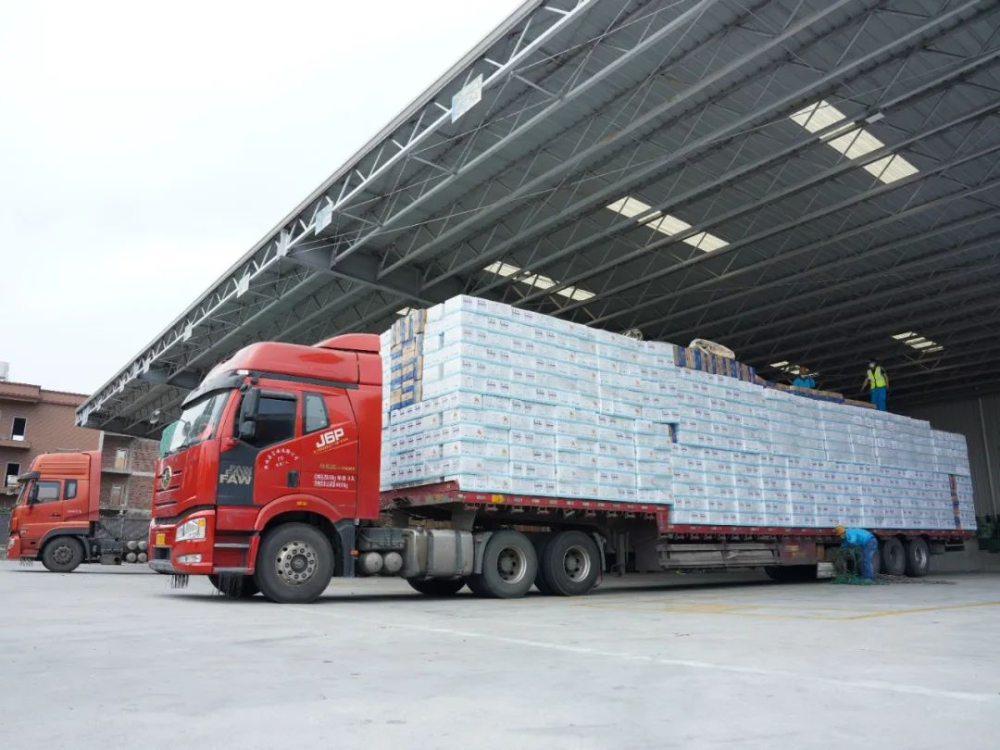
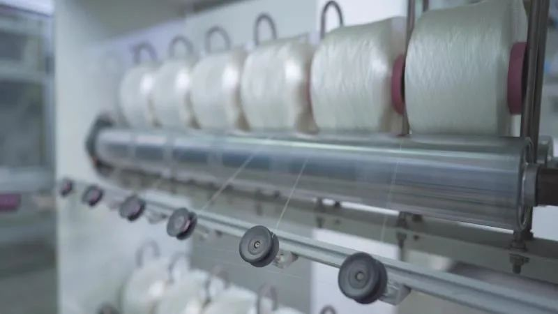
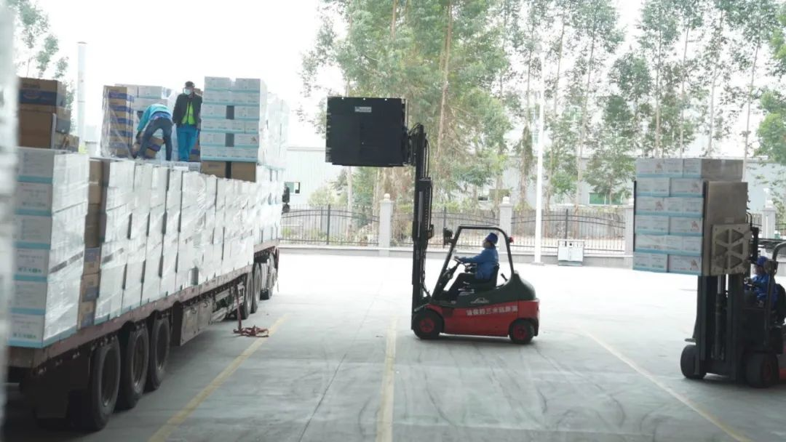

疫情席卷境内外供应链，中国制造该如何应对
原文链接 备份链接 作为仅次于美国的全球供应链中心、全球最大的制造业中心，中国制造能否应对疫情对供应链的冲击举世瞩目 要点 1，复产难过复工，半数企业产能恢复不到6成，半数企业预计3月底完全恢复产能 2，企业需要“链式协同复工”，每个企 …

在疫情期间，仅仅是湖北省妇幼保健院40天就有2207个新生儿降生。日均分娩量77人，最多的一天有108个新生儿来到这个世界。这些与疫情同时到来的孩子们，面临了新生儿物资的紧缺，和被感染的风险。
文｜许言
编辑｜桑柳
复工路漫漫
「爸爸，这个可不可以给湖北的小朋友？」1月底的某天，许清池陪儿子玩耍时，儿子突然向他抬起小手，紧紧攥着最爱的小机器人玩具。许清池不知道儿子的小心思是什么时候萌发的，他猜想，每天电视里滚动播出的新闻，戴着口罩在街上匆匆行走的大人，让7岁的孩子也注意到了外面正在发生的疫情。
他想到在湖北的孩子们。刚刚落地的，尚在襁褓被迫隔离的，他们还好吗？生活用品还够用吗？许清池的担忧并非没有道理。在疫情期间，仅仅是湖北省妇幼保健院40天就有2207个新生儿降生。日均分娩量77人，最多的一天有108个新生儿来到这个世界。这些与疫情同时到来的孩子们，面临了新生儿物资的紧缺，和被感染的风险。
许清池决定，要为湖北的孩子们做点什么。作为恒安国际集团有限公司分管运营的副总裁，他决定发动旗下婴幼儿品牌「安儿乐」捐赠纸尿裤给湖北宝宝。他想，这是一个国产品牌在此刻应有的担当。

许清池
恰逢春节假期，物流、生产线、沟通渠道都停滞了。发动全国经销商，只锁住了少量库存，顾不了那么多，许清池先派人把现有的物资往湖北运送。还得想办法，紧急复工生产是眼下唯一的选择。
1月30日，安儿乐位于福建晋江安海镇的纸尿裤工厂开工了。生产公司的总经理庄鸿义有些担忧，这一天，复工率只有20%。
人，是面临的第一个难题。安儿乐生产公司60%员工来自福建省外，贵川渝豫尤其多。按往年状况，公司考虑外省员工回家一趟不容易，会放满15天假期，让大家元宵过后再返回。今年为了加紧捐赠，公司通知正月初六省内员工先返工。但省内路途也不好走，到处封村封镇，不少员工接到通知后花了5天时间才到达厂区。
庄鸿义皮肤黝黑，标准国字脸。他闽南腔很重，掌握了福建人发音hf不分的精髓，每句话结束还会拖出个颇有力度的尾音「吼」。他初五就回到工厂，复工从搬货开始。1月29日，距离复工还不到24小时，安儿乐的捐赠已经开始。库房里500箱纸尿裤将要运往湖北。疫情期间找不到专业物流公司，庄鸿义就组织起几个留守厂房的值班人员自己搬货。那天的场景，回忆起来有些「狼狈不堪」。大门保安都被拉来了，一群男孩女孩跟着他满厂区跑，找液压车，找平板车，拽着电梯门，几个人把成箱的纸尿裤拖着、推着、扯着弄进电梯。有人在仓库二楼朝楼下喊，有人在接货的底楼往上望，蚂蚁搬家似的，一点一点地挪。庄鸿义一直担心，晚一分钟，也许这批纸尿裤就没办法准时上路。11个人，500箱货物，他们搬到暮色降临。
开始生产时，庄鸿义和工人们面临了远远超出了预想的困难。
无纺布是纸尿裤制造最重要的原材料。特殊时期，大部分无纺布被征用去做了口罩，剩余的能够提供给工厂的无纺布因为物流延缓原因，难以准时达到。同时，无纺布的价格还在不断翻倍上涨，重重困境造成了一场「原料危机」，但许清池告诉生产公司，要「不计成本」地生产下去，「一切为了宝宝」。
他们找到了一种费力但有效的办法：频繁换号。纸尿裤有尺码，从小码到大码，对应的原材料规格也不一样。大码生产线上的原材料可以替换成中码和小码的，中码纸尿裤没有材料时，就让大码的生产线切换成中码进行生产。为了能够给宝宝们提供更全尺码的纸尿裤，平衡每一款纸尿裤的数量，产品规格不同的生产线也需要进行换号。

纸尿裤生产线
换号的艰难，线长郑佳龙最清楚。1995年出生的他管理着4个操作工、1个设备作业员、1个设备技术员，以及7个包装工人。他时刻盯着每一台机器的生产状态，一点脏污和滴胶，他都会迅速地去清理，尺寸上的偏差他肉眼就能识别出来。每一次换号，都需要花费8个小时以上。全线机器停机、检测、调试。为了防止出错，要把原本的原材料、包装箱退出车间，清空车间，再进行新一批的材料进场、领料，每一个弧形刀零件也要更换、检测。因为返工问题，这段时间，一条生产线上的工人都是临时搭配，中间的磨合让换号变得更加困难。8小时，是所有人的速度极限，但同时，8个小时，一条生产线就可以生产1000件纸尿裤。换号代表着巨大产能的损耗、人员的浪费以及工人们指标考核的影响。仅仅2月份，全厂总共换号32次，被迫流失了32000件纸尿裤。
庄鸿义和郑佳龙想，还是得牺牲些东西。
包装则是让人头疼的最后一关。物流原因导致大量包装袋送不过来，加上厂里包装组的员工大多来自省外，还在复工路上，导致包装组跟不上前方生产线上源源不断的纸尿裤。
在漫长的协调中，生产公司摸索出「最好的节奏」。原本8小时三班倒的制度，调成了12小时两班倒，利用有限的员工填满所有的生产时间，让产能最大化。星期天的夜晚则全部停工，让机器保养修复，也让工人得以放松。
那是疫情最紧张的一段时间，周边大部分工厂还没有开工，街边原本有热闹的小吃叫卖，这时空空荡荡。安儿乐的工人们忙碌整整一周，终于在周日的晚上能守在宿舍，看看新闻，玩玩手机。他们知道，自己正在为抗击疫情做出贡献。

生产线员工
共同奔跑
这次回厂，郑佳龙发现工人们有点不一样了。
过去复工第一天，同僚们很容易没精打采。郑佳龙说，像小时候开学第一天，很少有人能迅速调整状态。但这回，他发觉每个人跟打了鸡血一样。进了车间，什么也不用说，工人们立刻开始抹抹擦擦，保养机器，清洁设备。按过往的经验，不熟悉的工人组合几乎没办法在8小时里顺利完成一次生产线换号，但他们做到了。郑佳龙没有主动去问，却明显感到工人之间萦绕着一股特别的氛围，「我本来想说些鼓励的话，后来发现根本不用说，都在心里。」郑佳龙说。
家人也很支持他们。郑佳龙不是安海镇本地人，初六接到复工通知，当时，通往安海的动车、大巴全部停运，是家里长辈开车把他送到了厂区门口。没有担心，家人觉得他在厂子里更安全。复工之前，许清池就再三嘱咐，一定要做好工人们和厂区的疫情防控，只有保护好自己，才有机会把更多的物资送往疫区。这里每天都发放免费的口罩，宿舍、食堂、车间到整个厂区，每24小时进行两次全面消杀。安儿乐作为日用卫生产品，车间消毒本就极为严格。疫情期间，一个工人更是要经过十几道查验消毒工序才能站到机器前。
因为隔离，进入工厂，就不要想着外出了——每个人心里都做了这样的准备。疫情改变了每个人的日常生活，以往，庄鸿义形容，食堂菜色「很杠杠」，排队打饭的人站不下脚，大家尤其喜欢围坐一起，边吃边聊。复工之后，庄鸿义宣布菜色减半。「怕员工去挑，选择盯那个红烧肉还是盯那个鸡腿，总是要逗留。」疫情中，员工们已经习惯了打上饭菜就走。食堂的桌位也重新布置过，安全引导员一直巡视，劝大家分开坐。
车间大楼和生活区的直线距离只有四十米，工作时间被拉长，活动区域在缩小，他们每天睁眼便是洗漱、吃饭、上车间；12小时后，下车间、吃饭、洗漱、睡觉。两班倒的工作制让每个24小时清晰且单调，郑佳龙和他的搭档们就这么度过了40多天。
陪伴他们最多的是镇上日日响着的防疫广播。广播先用闽南语放一遍，再用普通话放一遍。「大家再挺几天吼，牛肉羹、肉粽、菜粿、蚵仔煎，都可以吃到啦！」工人们更愿意听闽南语的广播，循环播放的当地美食，成为隔离日子中美好的寄托。
这是一段特殊的时光。郑佳龙想，在安儿乐工作两年，难得有这样与工人们时时刻刻待在一处的机会。他25岁，泉州出生，毕业前，学校里举办了恒安的招聘会，他兴冲冲地去了，顺利入职。说到纸尿裤，他立刻的联想就是「安儿乐」。
与公司的连接，庄鸿义体会得更深。因为这份工作，他在安海镇成了家。他记得，1997年，他第一次来到安海镇，这里的居民也许不知道五里桥，不知道紫帽山，但没有人不知道「恒安」。1997年，也是安儿乐成立的第二年。大学专业是机电一体化的庄鸿义，觉得没有比这里更适合自己的地方，「安儿乐，这名字一听就觉得舒服。」当时国内市场很少有公司做纸尿裤，更不要说国产自主品牌，庄鸿义因此相信，自己做的是一件非常先锋的事。这23年中，他既是安儿乐的生产者，也是使用者。他的孩子一直用安儿乐纸尿裤，「这还用选择吗？」他说。
这种与品牌强烈的、紧密的连结感，一代一代传承了下来。庄鸿义发现厂里青年的身上，也有这种特质。公司里有个女孩，怀孕五六个月了，复工第一天到厂里上班。她负责的是最为繁杂的调配物流、原材料订单处理的工作。庄鸿义劝她身体要紧，但女孩还是想为孩子们做点什么。
女性占据了安儿乐员工数的一半，占总数六成的省外员工中，大部分是女性，她们主要负责的都是包装、检验等精细活儿。复工期间，郑佳龙这样的线长更加意识到了「她们」的重要。
庄鸿义记得，2月上旬是人员分配最困难的时候，订单源源不断，捐赠数额也在增加，包装人员班次却撑不起生产线的负荷，有工人想来，被家人劝阻。觉得有点不好意思，但庄鸿义还是一个一个打电话跟员工家属沟通。当知道复工的产品将送往疫区，家人都松了口。第二天，包装人员足足增加了一整个班次。「他们知道多一个人对车间意味着什么，都赶了回来。」
庄鸿义说，在安儿乐二十多年，感受最大的就是「有爱」。因为有爱，安儿乐的员工们可以放弃与家人团聚的春节休假，承受不断停机换号带来的产能损耗，接受强度更大的工作要求……但是，大家还是相互信任，相互理解，扶持着度过了一次次困顿险境。虽然经历疫情的风浪，但他们总是怀揣着对世界和生活的善意，这样的善意也自然地流露在了那些由他们制造出来的产品中。这也是安儿乐一直的信念，为更多孩子、更多母亲、更多家庭创造有品质且舒适的生活。这种信念在疫情中变得尤为强烈，大家不分你我，一起进退，只为了同一个目标——把承载了安儿乐爱心的产品尽快送往疫区，送往那些需要的人手里。所有人共同奔跑了起来。

纸尿裤生产线
爱拼才会赢
2月14日，是2020年以来许清池最难忘的一天。那天没有玫瑰和烛光晚餐，他的情人节在等待一台口罩机。准确地说，恒安集团所有员工都在等待这一台口罩机。
口罩机来之不易，是许清池跑了一星期、四处找人帮忙才得来的。1月底，恒安集团接到政府通知，要将一些车间改建为口罩生产线，为防疫做好后援。没有把纸尿裤生产机器直接改装为口罩机，是为了保证纸尿裤生产线正常运作。正是疫情最紧张的时刻，国内所有的口罩生产设备都被政府统一调控，许清池决定出国寻找。他飞往东南亚，只要有口罩机货源消息，他就奔过去，不停地打电话，想着不磕下口罩机就不回国。因为疫情发展，大部分时间他只能守在酒店房间里，有消息了就赶去洽谈，被拒绝了就继续等待。最终有一家可以提供。许清池回想起当年做销售员扫街的日子，这段寻找口罩机的经历，对今天的他仍然是一种磨练。
口罩机比他更早地回到晋江。那天，原材料已准备好，几百位员工都等在工厂里，泉州海关工作人员也提前到了厂区。2020年情人节，恒安集团的第一批口罩开始生产。14天前，没有人能想到一个国产日用品企业如此快速地支起了一条全新品类的生产线。
其实，早在1月22日夜晚，旗下拥有17个卫生巾、纸尿裤等家庭生活用品专业品牌的恒安集团开始逐步复工。得知公司组织捐赠，并生产口罩、防护服、消毒湿纸巾等防疫物资，便有刚刚回家才一天的工人主动要求加入复工。有的线长就住在安海镇，得到消息，大年二十八就蹬着脚踏车匆匆跑回厂区。
远在湖北孝感的生产公司也在配合着这场行动。恒安集团在全国第二大卫生巾生产基地就位于孝感，他们很早就在政府的允许下进行复工，五六十个工人穿着防护服在基地生产卫生巾。其中，恒安集团在全国仅有的两位女性线长，也站在了复工生产的一线。从福建运过去的一批批物资到了高速口，孝感生产供应链的经理开车去高速口接货，送到疫区后，再回到城里。他告诉许清池，自己开车去接货不仅是了让捐赠物资可以最快速地到达需要的地方，也是让所有恒安人看到，疫情终将过去，我们也能回归到正常的日子。
许清池觉得，正是这些工人们一人一步地释放着信心的讯号，大家互相扶持，互相支撑，才能让每一个细节环环相扣，几百条生产线在疫情中坚持了这么久。

这次从上到下举全公司之力奋斗的精神，许清池把它解读为闽南人骨子里的打拼敢闯，就像人们最熟悉的那首闽南歌里唱的，「三分天注定/七分靠打拼/爱拼才会赢」。恒安集团从泉州晋江的安海镇起家。这是一个有着1300多年历史的小镇，与台湾金门岛隔海相望，临海有个船舶停靠的小港口，自古以来就是物流的重要关口。许清池说，安儿乐的「安」，也是恒安的「安」。恒安集团一直在助力子品牌安儿乐的发展，对安儿乐来说，恒安集团就是背后最有力的依靠。安儿乐不仅承继了恒安始终坚守品质第一的态度，也拥有作为一个民族品牌的责任与担当。凭借集团的支持，安儿乐才能走自主研发的道路。「安」有家国恒安的涵义，也寓意安海驶航。恒安的LOGO就是一艘扬帆起航的小红船，「远洋外出，坚持打拼的生活，对我们的影响非常深远。」许清池说。
2020年，也是恒安集团成立35周年。许清池说，和所有一线员工一起度过的这个特殊的春节假期，会长久留在所有人的记忆里。所有人的努力都是为了一个「安」字，从安儿乐的纸尿裤生产，再到口罩防护服的防疫物资，还有恒安为湖北地区一线女性医护承包下所有生理用品的行动。「大家生活不好，我们的产品卖得再好有什么用呢？都是为了家国恒安。」
2月26日，三辆长度17米的插板大货车从晋江安海镇出发了，它们载着恒安集团安儿乐品牌向湖北慈善总会捐赠的婴儿纸尿裤和孕产护理用品，总价值超420万元。这些承载着安儿乐一线员工日夜赶工生产出来的纸尿裤，分别被送往了孝感、黄冈、荆州、黄石、十堰等16个城市。
其实，除了婴儿纸尿裤，早在大年初二，恒安集团已经开启了对防疫一线的捐赠。截至目前，恒安集团已累计捐赠物资和现金2000余万元，消毒湿巾、卫生巾、防护服、萌睡裤、消毒洗手液、成人纸尿裤、婴儿尿裤、生活用纸等产品快速送抵防疫一线，投入到紧急的防疫一线需求。
值得一提的是，这次安儿乐捐出的纸尿裤大部分都来自于旗下高端品牌「奇莫」。奇莫的无纺布是特柔的，原材料需要定制。许清池说，疫区的孩子，接触以及感染病毒的可能性要高一些，防护措施一定要做好。这些材质更为柔软、过敏性更低的产品更加适合他们。这与24年来，安儿乐在制造工艺上始终秉持行业底线、坚持不用回收纸浆的初心相同，品质永远第一位。「没有考虑太多，只希望每一个妈妈都能放心。」许清池说。
口罩机解决后，许清池每天都准时来到公司。日子和平时并无不同。他最喜欢还是上网看用户评论。打开各大官方旗舰店，一页一页地翻看用户对安儿乐纸尿裤的评价，好的坏的他都默默记下，有时候还会特意与个别用户进行互动。他看重年轻妈妈们的感受。纸尿裤是种「母婴相连」的产品，与其他卫生用品不同，它的消费群体更迭迅速，购买活跃时间只有三年。意识到这点，除了保证产品质量外，安儿乐也一直在坚持走进年轻妈妈群体。设计团队平均年龄只有27岁，他们要做的是让设计年轻化、时尚化，持续地打动消费者。
也是在这场疫情救援互助中，许清池更加确信了用真诚打动妈妈们的重要性。他希望安儿乐捐出去的纸尿裤不只是「能用的」、「救急的」，而是要让妈妈们一摸就知道，这是细腻、柔软的安儿乐纸尿裤，是自主研发的国货品牌。「疫区人民可能对纸尿裤很急需，觉得有用就行。但我们不能这么想，我们要让他们感觉，哎呀，真好，想起纸尿裤，就会想起安儿乐，想起恒安，想起国货，想起是我们每个国人都在努力为抗击疫情做点什么。不仅让妈妈和孩子们觉得有东西可用，还要用得好，用得舒服。我们是怀着这样的心情，日以继夜地坚持着，生产着。」许清池说。

送往疫区的纸尿裤
没看够？
长按二维码关注《人物》微信公号
更多精彩的故事在等着你

原文链接 备份链接 作为仅次于美国的全球供应链中心、全球最大的制造业中心，中国制造能否应对疫情对供应链的冲击举世瞩目 要点 1，复产难过复工，半数企业产能恢复不到6成，半数企业预计3月底完全恢复产能 2，企业需要“链式协同复工”，每个企 …
原文链接 备份链接 为了尽快回到正常轨道，富士康在过去两周祭出了招工史上最贵的入职奖金，深圳工人响应踊跃，3.7万人报名，最后进入富士康工作的人不到1万 图/视觉中国 文 |《财经》记者 王凤 周源 编辑 | 谢丽容 过去两周，全球最大代 …
原文链接 备份链接 2019年上半年占据湖北省GDP约五分之一的112家省内上市公司，目前复工情况各异。部分公司影响不大，但也有企业收入面临较大下滑风险 文丨《财经》记者 张建锋 王颖 张欣培 刘以秦 编辑丨陆玲 3月16日，《财经》记 …
原文链接 备份链接 《创新经济战疫计划》，是燃财经在新型肺炎疫情期间推出的特别栏目，关注创新经济企业遇到的新难题、商讨应该采取的新对策，希望能够帮助中小企业一起战胜挑战、把握机会。 作者 | 苏琦 编辑 | 魏佳 新冠疫情爆发以来，和“ …
原文链接 备份链接 虽然受疫情影响巨大，但大宗原材料行业普遍预计疫情结束后的需求反弹将带动行业回暖 图/视觉中国 文 |《财经》记者 李斯洋 编辑 | 马克 新冠疫情给油气、煤炭、钢铁、有色金属等这些关乎国民经济命脉的大宗原材料价格造成 …